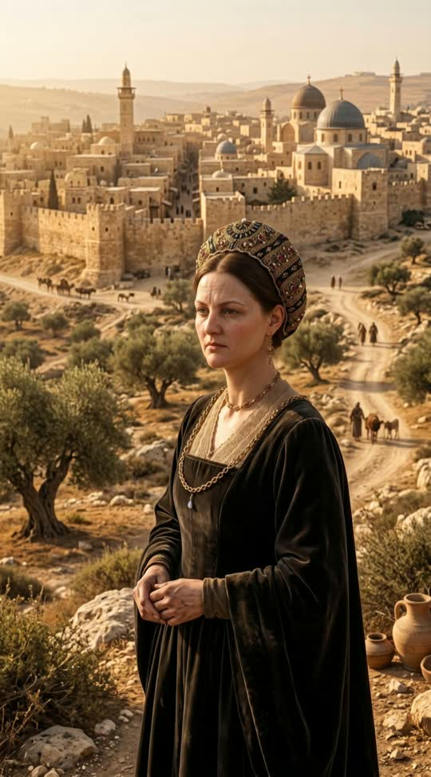

Cinematic Trailer Proposalהצעה להפקת טריילר קולנועי
She financed kings, rescued thousands from the Inquisition, and dared to declare a boycott on the Pope. Four hundred years before Herzl, she bought an entire city in the Land of Israel. A cinematic trailer carrying the peaks of that life, end to end. היא מימנה מלכים, הצילה אלפי אנוסים מהאינקוויזיציה, והעזה להכריז חרם על האפיפיור. 400 שנה לפני הרצל היא קנתה עיר שלמה בארץ ישראל. טריילר קולנועי שנושא את שיאי החיים האלה, מקצה לקצה.
Her worldהעולם שלה
Lisbon, Antwerp, Venice, Ferrara, Constantinople, Ancona, Tiberias — one lifetime, seven cities, and a rescue network running between them. ליסבון, אנטוורפן, ונציה, פרארה, קושטא, אנקונה, טבריה — חיים אחדים, שבע ערים, ורשת הצלה שנעה ביניהן.
Click “Begin the journey”, then press ▶ for the guided tour. לחצו “התחל את המסע”, ואז ▶ לסיור המודרך.
Why this oneלמה דווקא זה
Doña Gracia should be a household name. She ran one of the largest fortunes in Europe, built an underground rescue network centuries before the term existed, stood alone against a Pope, and bought a city in the Land of Israel three hundred and fifty years before the First Zionist Congress. Most people have never heard of her. דונה גרציה הייתה צריכה להיות שם שכל אחד מכיר. היא ניהלה אחד מההונות הגדולים באירופה, בנתה רשת הצלה מחתרתית מאות שנים לפני שהמונח נולד, עמדה לבדה מול אפיפיור, וקנתה עיר בארץ ישראל 350 שנה לפני הקונגרס הציוני הראשון. רוב האנשים מעולם לא שמעו עליה.
I am not taking this on as another piece of content. I believe this is going to travel, that it will move people, and that it will put Doña Gracia where she has always belonged. That is why I want to make it properly. אני לא ניגש לזה כעוד תוכן. אני מאמין שזה יתפשט, שזה ירגש אנשים, ושזה ישים את דונה גרציה במקום שתמיד הגיע לה. בדיוק בגלל זה אני רוצה לעשות את זה כמו שצריך.
Investmentהשקעה
A finished cinematic trailer of about three minutes, animated throughout, with recorded narration, original score and English subtitles.טריילר קולנועי מוגמר של כ-3 דקות, מונפש לכל אורכו, עם קריינות מוקלטת, מוזיקה מקורית וכתוביות באנגלית.